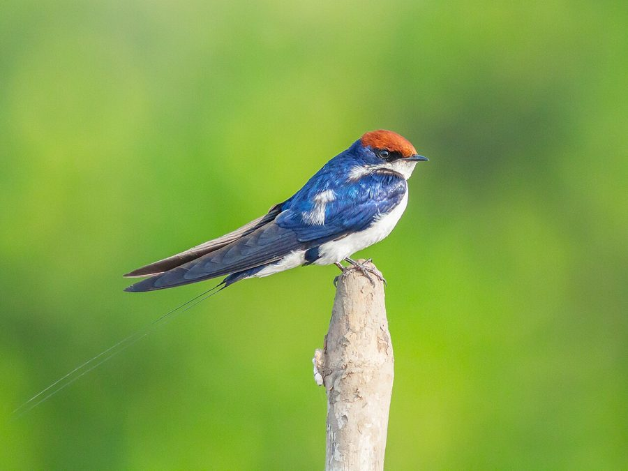

लेशराWire-tailed Swallow
Hirundo smithii · Hirundinidae · BRD-0108

- Scientific name
- Hirundo smithii Leach, 1818
- Family
- Hirundinidae
- Hindi
- लेशरा
- Local names
- leshra, leshara, ababeel, wire tailed swallow
- Status here
- native
- IUCN
- LC
- Review
- audited and independently read
When to look कब देखें
Present all year.
लेशरा / Wire-tailed Swallow
Hirundo smithii Leach, 1818 — Hirundinidae
लेशरा — भारत की सबसे सुंदर अबाबीलों में से एक, जिसकी लंबी तारों जैसी पूँछ के धागे होते हैं। यह नदियों और पानी के पास पाई जाती है। इसके घोंसले बहुत ही अद्भुत होते हैं — गीली मिट्टी से बने ट्यूब के आकार के घोंसले जो पत्थरों और पेड़ों पर लटकते हैं। यह घोंसला बारिश में मजबूत रहता है। लेशरा समूहों में उड़ती है और आकाश में कलात्मक नृत्य करती है। पूरे भारत में यह एक आम पक्षी है।
Quick Identification त्वरित पहचान
| Feature | Description |
|---|---|
| Size | Small swallow (17–19 cm body; 25–30 cm with tail wires); elegant and slender |
| Plumage | Dark steel-blue upperparts; chestnut-rufous cap and rump; white underparts with buff flanks |
| Head | Rufous or chestnut cap; dark blue cheek and ear coverts |
| Back and wings | Dark blue-black; metallic sheen in good light |
| Rump | Chestnut or rufous; conspicuous in flight |
| Tail | Distinctive: very long, deeply forked; two elongated outer feathers drawn out to fine wire-like points |
| Underparts | White or pale buff on throat and underparts; buff or rusty flanks |
| Bill | Short, black; typical of swallows |
| Behaviour | Highly aerial; often seen in small groups; graceful, buoyant flight |
Field tip: Watch for small flocks hawking insects over water and open areas near rivers. The distinctive elongated tail wires (even if missing tips) are diagnostic. Often nests on cliffs near water or under building eaves. Look for distinctive mud-tube nests.
Morphology आकारिकी
Biometrics (subspecies filifera, Indian populations including eastern UP):
| Measurement | Range |
|---|---|
| Total length (body) | 170–190 mm |
| Total length (including tail wires) | 250–300 mm |
| Wing (flattened chord) | 120–140 mm |
| Tail (central feathers) | 70–90 mm |
| Outer tail feathers (wire) | 120–160 mm (extensions beyond central feathers) |
| Tarsus | 12–14 mm |
| Bill (culmen) | 8–10 mm |
| Weight | 16–22 g |
Plumage: Crown, nape, and sides of head chestnut-rufous or buff. Lores and cheeks dark blue-black. Back, mantle, and wings dark blue or steel-blue with metallic sheen. Rump chestnut or rufous, contrasting with back (conspicuous in flight). Tail dark blue-black with two extraordinarily elongated outer feathers drawn out to fine hair-like or wire-like points — the "wire" feathers can measure 5–10 cm longer than central feathers. Underparts mostly white; throat white; breast and belly white; flanks buff or rusty. Undertail coverts buff.
Bare parts: Eyes dark brown. Bill small, black, slightly flattened. Legs and feet dark.
Sexes: Males have longer tail wires than females; females slightly smaller.
Juveniles: Duller than adults; cap and rump paler; tail wires shorter or undeveloped; underparts pale buff.
Vocalisations
Wire-tailed Swallows are vocal birds, particularly in flocks.
- Flight call: A soft, rapid "twit-twit-twit" or chirping vocalisation uttered frequently during flight, especially when in flocks.
- Contact call: Soft, twittering sounds between flock members.
- Nesting call: Slightly harsher chattering at nest sites, particularly when alarmed.
- Song: Males produce a soft, warbling song with rapid notes, often delivered in flight as part of territorial or courtship behaviour.
Behaviour & Ecology व्यवहार और पारिस्थितिकी
Aerial insectivore: Wire-tailed Swallow hunts flying insects exclusively, catching prey on the wing with great agility. Often seen in characteristic low, graceful flight over water or grasslands.
Gregarious: Highly social; usually seen in pairs or small flocks, particularly outside breeding season. Flocks often roost together, sometimes mixing with other swallow species.
Skilled mud architect: Builds distinctive mud-tube nest with a downcurved entrance tube. Nests are constructed by both sexes using mud pellets collected from riverbanks, formed into a globular structure with an elongated tube entrance. Nests are attached to cliff faces, rocky overhangs, or building eaves, usually near water.
Breeding and territorial: Pairs are monogamous and remain together throughout the year. Males are territorial during breeding season, performing aerial displays with twirling and diving flight.
Migratory movements: Largely resident in India, but may show local movements in response to water availability and food abundance. Some populations are partial migrants.
Life Cycle / Phenology जीवन चक्र
- December–January: Pairing and nest site selection
- January–February: Nest building; mud collection and construction (takes 2–3 weeks per nest)
- February–March: Egg-laying (2–3 eggs per clutch)
- March–April: Incubation (12–15 days); chick-rearing begins
- April–May: Nestlings fledge (18–21 days); chicks may remain with parents for several weeks
- May–June: Second breeding attempt possible (2–3 broods per year)
- June–November: Post-breeding; reduced breeding activity; more feeding and social behaviour
- Year-round: Continuous presence in suitable habitat
Host Plants or Prey आहार
Strictly insectivorous:
- Flying insects: small flies, gnats, mosquitoes, small moths
- Flying termites (alates)
- Small flying arthropods
- Insects attracted to lights (in villages)
Predators / Natural Enemies शत्रु
- Besra (Accipiter virgatus) and other small falcons — hunt in flight
- Peregrine Falcon (Falco peregrinus) — hunts while on passage or at roosts
- Snakes — raid nests
- Crows (Corvus spp.) — mob flocks; may take fledglings
Agricultural / Human Relevance कृषि प्रासंगिकता
Flying insect control: By hunting flying insects, Wire-tailed Swallow provides ecosystem services in agricultural and wetland areas, potentially reducing pest insect populations.
Cultural significance: In rural India, swallows are often viewed positively, associated with spring and summer. In some traditions, they are considered auspicious.
Protected status: Schedule IV of the Wildlife (Protection) Act, 1972 (India). The species is legally protected throughout the country.
Expected Locally स्थानीय रूप से अपेक्षित
Not a field record. Written from published accounts for eastern Uttar Pradesh. No confirmed local sighting yet — if you have seen it, that is what the atlas needs.
अभी तक स्थानीय पुष्टि नहीं। यह विवरण प्रकाशित स्रोतों से है, किसी अवलोकन से नहीं।
Wire-tailed Swallow is expected year-round as a resident in Basti and Ayodhya districts, particularly near rivers (Ghaghra), water bodies, and wetlands. Look for flocks hawking insects over water and open areas, especially in early morning and late afternoon. Watch for the distinctive mud-tube nests on cliff faces and rocky overhangs, particularly along river gorges. The elongated tail wires are visible even in fast flight.
Distribution वितरण
Global range: Widespread across the Indian subcontinent from the Himalayan foothills to peninsular India; also occurs in Pakistan, Myanmar, and other Asian regions.
In India: Common resident throughout the mainland, particularly in areas with rivers and water bodies.
In Uttar Pradesh: Resident throughout the state wherever suitable rivers and water courses occur.
In Basti district / eastern UP: Expected as a resident, particularly along the Ghaghra river system and other water bodies.
Research Questions शोध प्रश्न
- Where are the main nesting colonies in Basti and Ayodhya, and what cliff characteristics do they prefer? / घोंसले कहाँ हैं? — Locate and monitor nesting sites; document cliff orientation, height, and protection from elements.
- How long do individual pairs remain together, and do they reuse nests? / क्या हर साल एक ही जगह में घोंसला बनाते हैं? — Monitor individual pairs and nests across breeding seasons.
- What is the seasonal variation in flock size and composition? / झुंड के आकार में क्या फर्क है? — Count flocks throughout the year (simple observation, no equipment needed).
- What insects are consumed, and how does diet change seasonally? / क्या खाते हैं? — Collect and examine regurgitated pellets from nests.
- How do Water table and river flow changes affect nesting success? — Monitor nesting timing relative to rainfall and water availability.
Similar Species मिलती-जुलती प्रजातियाँ
| Species | How to tell apart | हिंदी |
|---|---|---|
| Barn Swallow (Hirundo rustica) — if present | Smaller; less distinctive plumage; shorter tail (no wires); white spots on tail | गौरैया जैसी अबाबील — सरल |
| Red-rumped Swallow (Cecropis daurica) — if confused | Buff rump (not chestnut); pale underparts; shorter tail (no wires) | लाल-पीठ की अबाबील — अलग |
| Mosque Swallow (Hirundo senegalensis) — if vagrant | Darker overall; different throat and forehead pattern; no wires on tail | अफ़्रीकी अबाबील — दुर्लभ |
Field rule: Small swallow + chestnut cap and rump + dark blue back + extremely long tail wires + near water = Wire-tailed Swallow. The tail wires are diagnostic and unmistakable.
Taxonomy & Classification वर्गीकरण
Original description. This species was first described as Hirundo smithii by William Elford Leach in 1818, with type locality India.
Subspecies. Two subspecies recognised: H. s. filifera (the Indian subspecies, occurring in Uttar Pradesh) and H. s. smithii (Asian subspecies). The two subspecies differ slightly in size and plumage tone.
Family and order placement. Order Passeriformes; family Hirundinidae (swallows and martins). Hirundinidae includes about 90 species of small insectivorous birds worldwide.
Phylogenetic notes. Molecular studies place Wire-tailed Swallow within a clade of Asian Hirundo species, distinct from African and European forms.
IUCN status rationale. Assessed as Least Concern (LC). The species is widespread, maintains stable populations, and shows flexibility in breeding and habitat use.
Photo Gallery फोटो गैलरी
No photos yet — add field photos to media/species/wire_tailed_swallow/ and run node scripts/sync_photos.js.
Photos needed आवश्यक फोटो
- [ ] Perched bird showing chestnut cap, blue back, and tail wires (लेशरा की लंबी पूँछ)
- [ ] In flight showing elongated tail wires and rump colour (उड़ते समय)
- [ ] Flock in flight (झुंड में)
- [ ] At mud nest (घोंसले के पास)
- [ ] Close-up of head showing rufous cap and blue face (सिर और पूँछ)
References संदर्भ
- Leach, W.E. (1818). Zoological Miscellany. Vol. 1. London.
- Ali, S. & Ripley, S.D. (1987). Handbook of the Birds of India and Pakistan. Vol. 5. Oxford University Press, New Delhi.
- Grimmett, R., Inskipp, C. & Inskipp, T. (2011). Birds of the Indian Subcontinent. 2nd ed. Christopher Helm, London.
- Rasmussen, P.C. & Anderton, J.C. (2005). Birds of South Asia: The Ripley Guide. Smithsonian Institution, Washington DC.
- Turner, A.K. & Rose, C. (1989). A Handbook to the Swallows, Martins and Saw-wings of the World. Christopher Helm, London.
- BirdLife International (2024). Hirundo smithii. IUCN Red List of Threatened Species. Ver. 2024.
- GBIF Occurrence Data — Hirundo smithii, Uttar Pradesh (2010–2025).
Source file: species/fauna/birds/wire_tailed_swallow.md